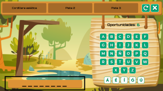
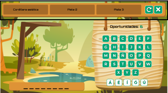
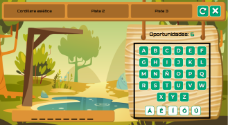
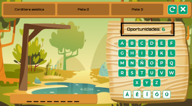
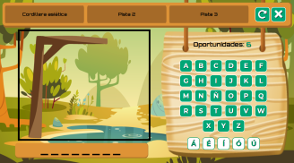
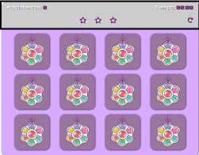

1. Primero tendrás que seleccionar la categoría que quieres jugar:
2. Cuando empiece el juego, en la parte inferior izquierda como puedes ver en la foto:
Podrás comprobar el número de letras que tiene la palabra que buscas, solo tendrás que contar los guiones.
3. Una vez sepas cuántas letras tiene la palabra podrás comprobar la pista inicial en el panel superior, para leer las demás tendrás que pulsar encima de ellas
En dicho panel también encontrarás dos botones, el primero sirve paa reiniciar el juego en la misma categoría escogida y
el segundo para volver a la página inicial de la web en caso de querer cambiar de juego o cateogría
4. Una vez leas la pista inicial puedes empezar a probar letras, para ello tendrás que pulsar el botón de la letra que quieras probar:
5. Podrás comprobar las oportunidades que te quedan encima de los botones de las letras:
6. Como en cualquier juego del ahorcado cada vez que falles una letra irán apareciendo las imágenes, tu objetivo es adivinar la palabra antes de completar el dibujo
Ya estás list@ para disfrutar del juego. ¡ Te deseamos mucha suerte !
Volver al inicio1. Primero tendrás que seleccionar la categoría que quieres jugar:
2. Cuando empiece el juego, en la parte superior como puedes ver en la foto:
Podrás comprobar en todo momento los movimientos que llevas, el tiempo que ha pasado desde que empezaste a jugar y la puntuación que vayas consiguiendo mientras juegas.
Por otro lado también encontrarás un botón que podrás pulsar en
caso de querer reiniciar el juego.
3. Para jugar lo único que tienes que hacer es pulsar en las cartas del tablero e intentar memorizar la carta que sale,
para en caso de fallar cuando encuentres la pareja correspondiente no tengas
que gastar movimientos en falso
Ya estás list@ para disfrutar del juego. ¡ Te deseamos mucha suerte !
Volver al inicio